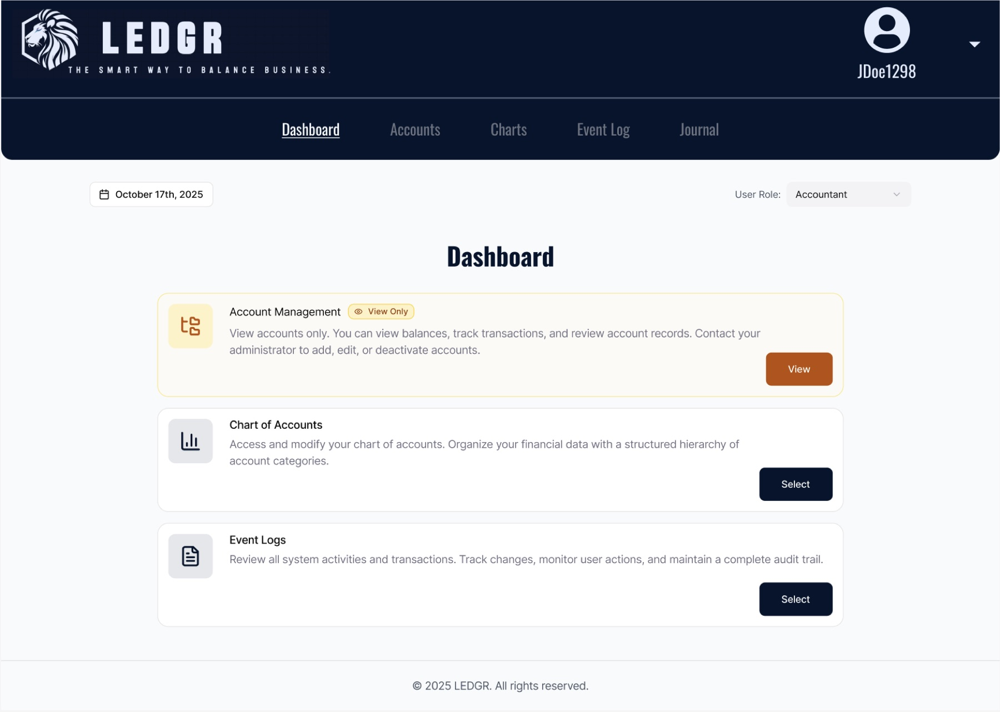
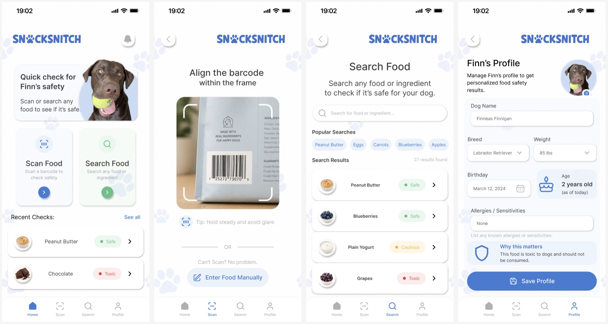
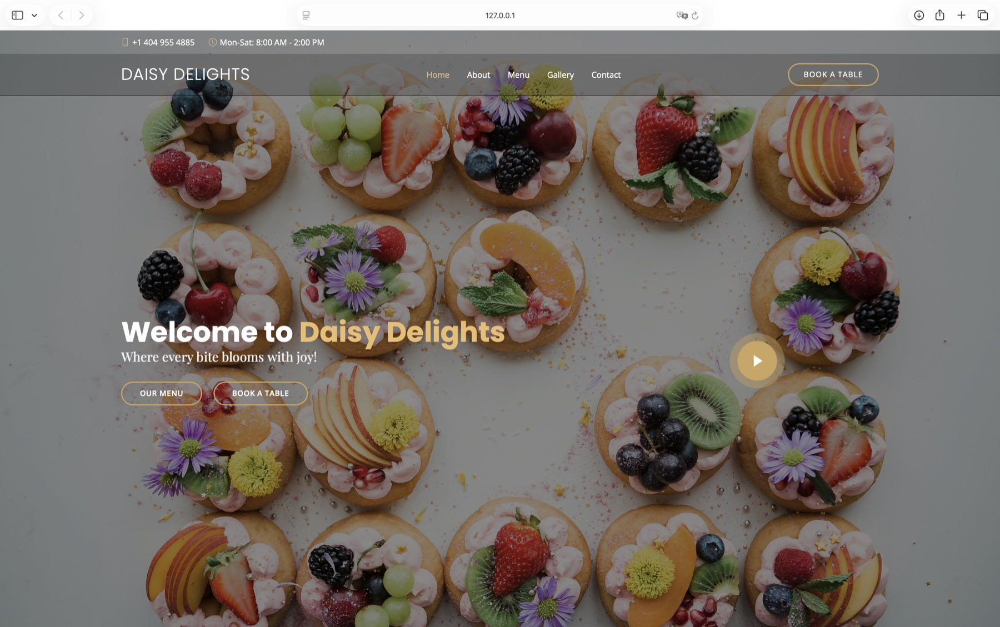
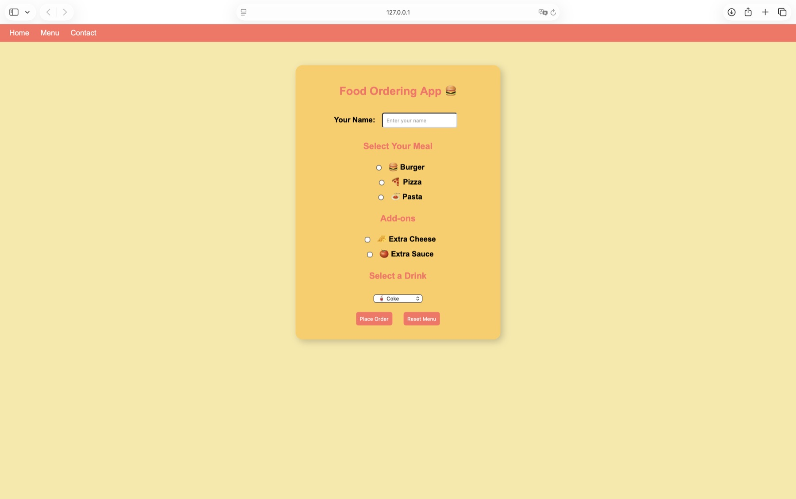

Accounting Platform
Ledgr Accounting Software
A web-based accounting application designed to help businesses manage accounts, journalize transactions, prepare trial balances, and create financial statements.
C#BlazorSQLiteJavaScript

Accounting Platform
A web-based accounting application designed to help businesses manage accounts, journalize transactions, prepare trial balances, and create financial statements.

Mobile Product Design
A dog-safe food lookup application that helps pet owners quickly determine whether foods are safe, unsafe, or should be fed with caution through an intuitive, mobile-first interface.

Responsive Business Website
A responsive bakery and café website with intuitive navigation, menu and gallery sections, reservations, and a mobile-friendly interface.

Interactive Web Application
An interactive food ordering webpage that lets customers personalize a meal, choose add-ons and a drink, and submit or reset their selections through a clear, approachable interface.
Want to see more of my development work?
View All Projects on GitHub